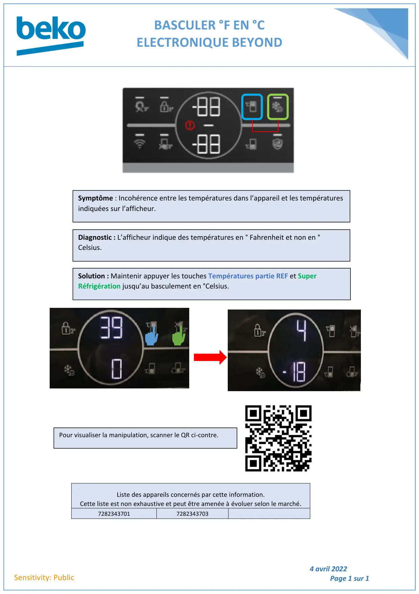

Basculement °F en °C electronique Beyond

BASCULER °F EN °CELECTRONIQUE BEYOND4 avril 2022Page 1 sur 1Sensitivity: PublicListe des appareils concernés par cette information.Cette liste est non exhaustive et peut être amenée à évoluer selon le marché.72823437017282343703Symptôme : Incohérence entre les températures dans l’appareil et les températuresindiquées sur l’afficheur.Diagnostic : L’afficheur indique des températures en ° Fahrenheit et non en °Celsius.Solution : Maintenir appuyer les touches Températures partie REF et SuperRéfrigération jusqu’au basculement en °Celsius.Pour visualiser la manipulation, scanner le QR ci-contre.
1 / 1